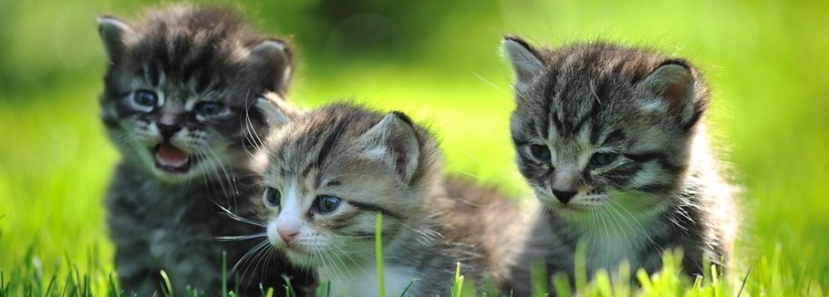

-Contributors to extinction-
Inbreeding
is the production of offspring from the mating or breeding of individuals or organisms that are closely related genetically. By analogy, the term is used in human reproduction, but more commonly refers to the genetic disorders and other consequences that may arise from expression of deleterious recessive traits resulting from incestuous sexual relationships and consanguinity. Animals avoid inbreeding only rarely.
Inbreeding reduces survival and reproduction (i.e. it causes inbreeding depression), and thereby increases extinction risk. Inbreeding depression is due to increased homozygosity for harmful alleles and at loci exhibiting heterozygote advantage.
The accumulation of deleterious mutations
a mutation is an alteration in the nucleic acid sequence of the genome of an organism, virus, or extrachromosomal DNA. Viral genomes contain either DNA or RNA. Mutations result from errors during DNA or viral replication, mitosis, or meiosis or other types of damage to DNA (such as pyrimidine dimers caused by exposure to ultraviolet radiation), which then may undergo error-prone repair (especially microhomology-mediated end joining), cause an error during other forms of repair, or cause an error during replication (translesion synthesis). Mutations may also result from insertion or deletion of segments of DNA due to mobile genetic elements.
The accumulation of slightly deleterious mutations in populations leads to the buildup of a genetic load and can cause the extinction of populations of small size.
Genetic drift
also known as random genetic drift, allelic drift or the Wright effect, is the change in the frequency of an existing gene variant in a population due to random chance. Genetic drift may cause gene variants to disappear completely and thereby reduce genetic variation.
Genetic drift can result in the loss of alleles from the population. Ultimately, these alleles will become extinct, or the entire population can become extinct. This can eventually cause rapid evolution.
Taxonomic uncertainties
A taxon is Extinct when there is no reasonable doubt that the last individual has died. A taxon is presumed Extinct when exhaustive surveys in known and/or expected habitat, at appropriate times (diurnal, seasonal, annual), throughout its historic range have failed to record an individual.
This lack of knowledge can lead to a reprioritization of conservation efforts
Outbreeding depression
happens when crosses between two genetically distant groups or populations result in a reduction of fitness. The concept is in contrast to inbreeding depression, although the two effects can occur simultaneously. Outbreeding depression is a risk that sometimes limits the potential for genetic rescue or augmentations. It is considered postzygotic response because outbreeding depression is noted usually in the performance of the progeny.
If hybrid fitness is strongly reduced relative to that of parental individuals (i.e., outbreeding depression), and hybridization is common, population growth rates of one or both parental lineages may decline below replacement rates due to wasted reproductive effort, leading to extinction
Source: wiki